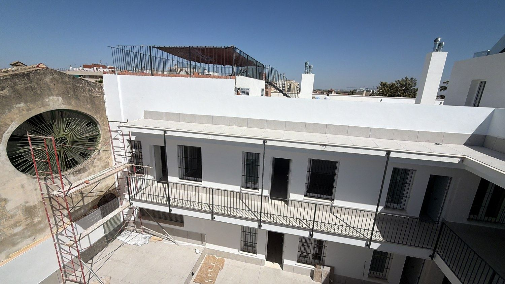
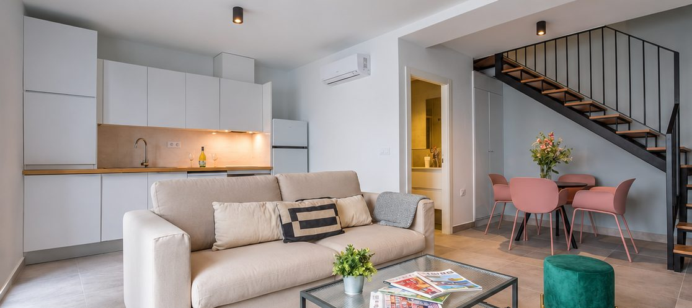
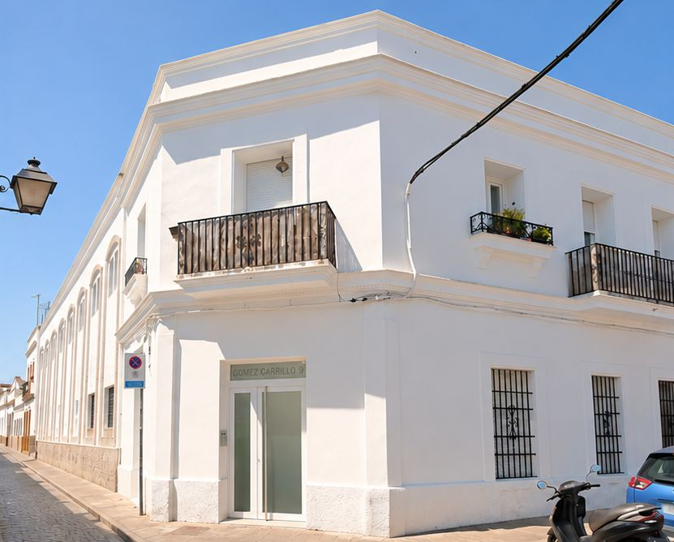

Ideas para vivir e invertir en Jerez
Mercado inmobiliario, consejos para comprar o vender y novedades de nuestras promociones, contado de forma clara.

Vive la zambomba: la Navidad más cálida de Andalucía está en Jerez
Patios, villancicos flamencos y vecinos que te reciben como uno más. Cómo vivir la zambomba y dónde alojarte en pleno barrio de San Miguel.
Leer artículo →
Obra nueva en Jerez: lo que de verdad se paga por metro cuadrado
Qué se pide hoy por la obra nueva en Jerez, qué incluye el precio y cómo comparar bien antes de invertir. Con datos, no con promesas.
Leer artículo →
Lo que cuesta de verdad comprar una vivienda en Jerez
Precio, impuestos, notaría, hipoteca y ahorro necesario: hacemos las cuentas reales con un ejemplo de hoy, sin letra pequeña.
Leer artículo →
Jerez después de la pandemia: el auge turístico que está transformando la ciudad
Récord de pernoctaciones, más empresas turísticas y una ciudad que se moderniza. Qué atrae a quien nos visita y cómo está revalorizando la vivienda.
Leer artículo →
El centro de Jerez vuelve a estar habitado, y es el momento de entrar
El precio de la vivienda en Jerez casi se ha duplicado desde 2022. Qué ha pasado, por qué el centro es la gran oportunidad y hacia dónde va el mercado.
Leer artículo →